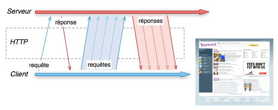
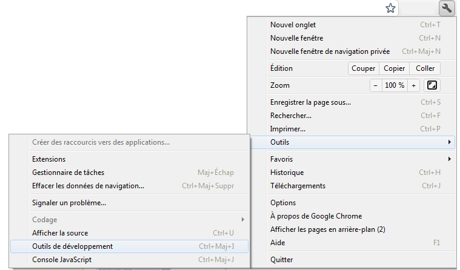
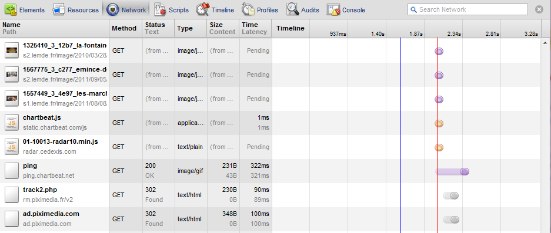
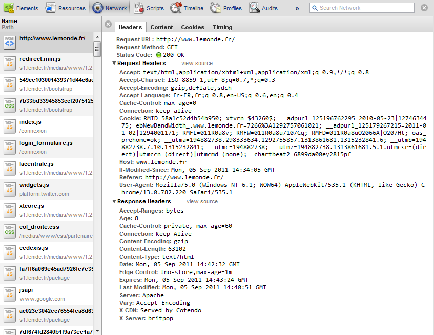

Le but de ce tp est de voir en pratique comment sont formés des requêtes et des réponses http.
L'HyperText Tranfert Protocol est un protocol simple, haut niveau et extensible.
Il permet d'échanger des données selon un mode requête - réponse.
telnet est une application en ligne de commande qui permet de se connecter à des serveurs distants.
Par défaut, le port utilisé est 23.
Mais si on se connecte sur un serveur qui ne respecte pas le protocole attendu, le client bascule en mode raw TCP, pratique pour forger des requêtes HTTP
Par exemple
$ telnet www.rtl.fr 80 Trying 141.138.89.209... Connected to webcache.rtl.fr. Escape character is '^]'.
A partir de là, le client est en attente, on tape GET / HTTP/1.1 et deux fois entrée.
GET / HTTP/1.1↵
↵
HTTP/1.1 200 OK
Content-Type: text/html;charset=UTF-8
Content-Language: fr-FR
Vary: Accept-Encoding
X-Cacheable: Yes; Homepage, 60s
Transfer-Encoding: chunked
Date: Tue, 13 Nov 2012 08:56:13 GMT
Age: 23
Connection: close
Server: Amber/1.1
X-Object-ID: 1676037310 1676027370
008000
<!DOCTYPE html PUBLIC "-//W3C//DTD XHTML 1.1//EN" "http://www.w3.org/TR/xhtml11/DTD/xhtml11.dtd">
<html xmlns="http://www.w3.org/1999/xhtml" xml:lang="fr">
<head>
<meta http-equiv="content-type" content="text/html; charset=utf-8" />
...
Nous avons forgé une requête http et obtenu une réponse
La commande curl permet de forger plus simplement des requêtes vers un serveur http.
$ curl http://www.lemonde.fr ...
Le contenu de la page s'affiche dans le terminal.
Cela équivaut à la requête http suivante sur www.lemonde.fr
GET / HTTP/1.1
Si on souhaite voir les headers.
$ curl --head http://www.lemonde.fr HTTP/1.1 200 OK Accept-Ranges: bytes Cache-Control: max-age=60 Content-Type: text/html Date: Wed, 28 Nov 2012 08:07:02 GMT Last-Modified: Wed, 28 Nov 2012 08:06:19 GMT Server: ECS (cdg/44C4) Via: 1.1 varnish X-Cache: HIT X-CDN: Served By EdgeCast X-Server: speed X-Varnish: 1364646405 1364646110 X-Varnish-Cache: HIT X-Varnish-Server: speed.lemonde.fr Content-Length: 300860
Ou ajouter des headers à la requête
$ curl --header "Accept: text/html" http://www.lemonde.fr
Curl est extrêmement puissant et permet de forger toutes les requêtes http possibles.
Voici les options les plus intéressantes
-X, --request <command> comande HTTP (ex: -X POST) -H, --header <header> ajout d'un header (ex: -H "Accept:text/html") -A, --user-agent <agent string> header user-agent -I, --head affiche que les headers de la réponse -i, --include affiche les headers de la réponse -d, --data <data> données du body
Par exemple pour faire un post en envoyant des données json
$ curl -i -X POST -H "Content-Type: application/json" -d '{"key": "value"}' http://my.site.fr/page
Avec l'avènement de REST, il est devenu très utile de pouvoir forger ses requêtes afin de tester ses services.
Les navigateurs modernes permettent de voir facilement l'ensemble des requêtes et réponses http.
Pour ce tp, nous allons utiliser chrome qui dispose d'un jeu d'outils très complet.
Le raccourçi est Crtl+Maj+I.
Lorsque l'on fait une requête vers un site, l'onglet network permet de voir toutes les requêtes effectuées.
Pour chaque ressource, on y voit :
Une page web un peu riche peut facilement contenir plusieurs centaines de ressources.
L'affichage d'une page web peut donc prendre plusieurs secondes, le temps de récupérer toutes les données et de mettre en place les éléments dans la page interprétée.
Nous allons prendre un des éléments de la liste et regarder en détails le contenu de l'échange.
Toujours dans l'onglet network, si on clique sur une ressource, on obtient les informations suivantes.
On retrouve le nom, la méthode et le code de retour mais cette fois on voit les headers http.
Les Request Headers sont les options envoyées par le navigateur vers le serveur.
Les Response Headers sont des informations complémentaires au contenu renvoyées par le serveur.
Dans les 2 cas, ce sont des couples (clé - valeur) qui sont en début de requête ou de réponse.
Il est possible de définir ses propres headers en étandant les headers standards (X- pour extended).
Coté code, on peut aussi forger des requêtes http.
Le plus simple est d'utiliser une librairie cliente telle que la lib HttpClient de la fondation apache
Pour faire un test, nous commençons par ajouter la dépendance dans le pom.xml
<dependency>
<groupId>org.apache.httpcomponents</groupId>
<artifactId>httpclient</artifactId>
<version>4.1.2</version>
<scope>test</scope>
</dependency>
Ensuite on crée une classe de Test dans src/test/java dans le package fr.todooz.http
public class HttpClientTest {
@Test
public void get() {
}
}
En suivant le HttpClient Tutorial, faire une requête vers www.lemonde.fr et vérifier le code de retour.
Les classes intéressantes sont HttpClient, HttpGet et HttpResponse.
Une fois le test en place, on ajoute un @Ignore sur le test afin qu'il ne soit pas exécuté à chaque build avec les tests unitaires.
HttpClient est un client http complet qui permet de faire des requêtes http depuis du code java.
Beaucoup d'options sont disponibles pour le comportement du client en lui même : pooling, timeouts...